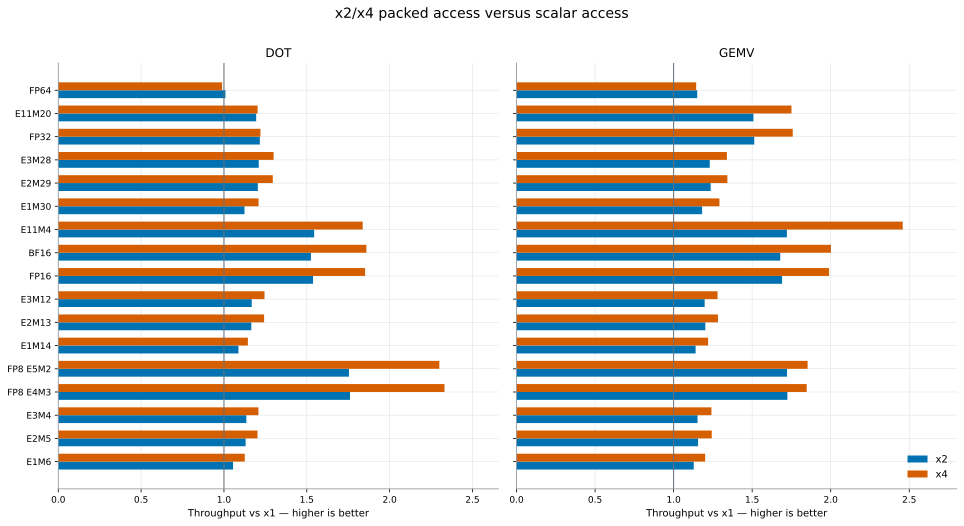

Packed vs unpacked
Direct x2/x4 versus x1 comparisons using equal logical work, so packed lanes are normalized correctly.
Large-problem packing benefit
This compares throughput at the largest tested N; 1 means packing made no difference.

Packing benefit by N
This reveals whether a format needs a large problem before fewer load instructions repay unpacking overhead.